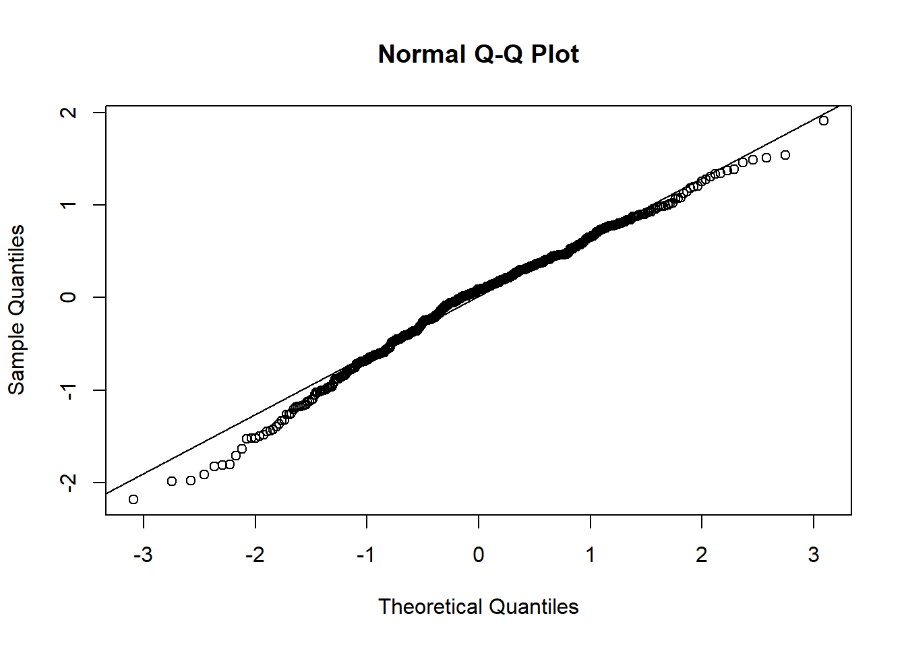
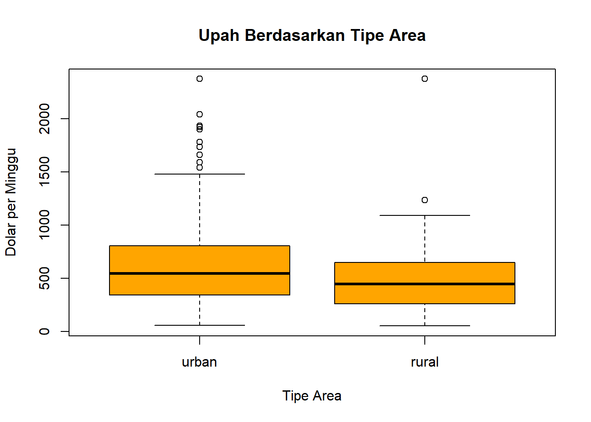
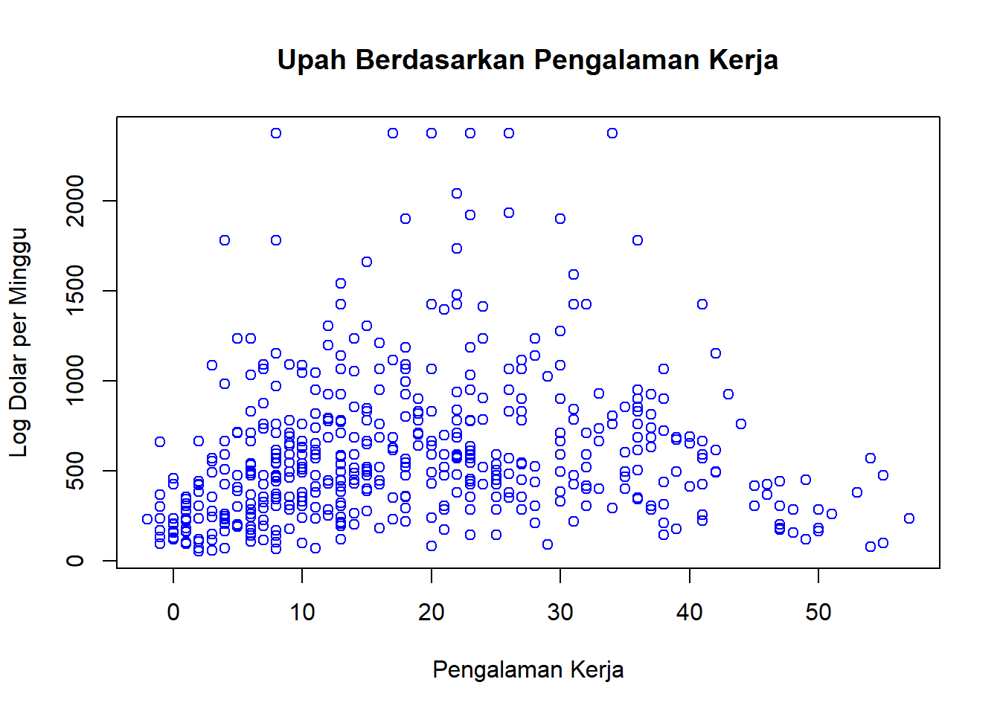
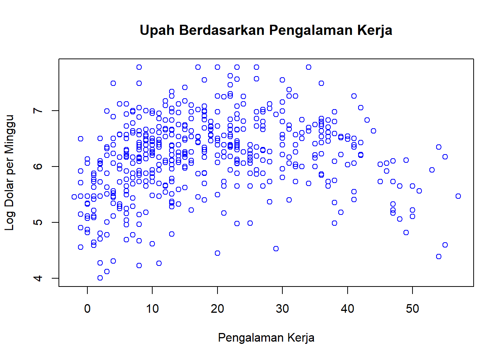

wage education experience ethnicity area_type region parttime
1 498.58 14 15 cauc urban south no
2 205.76 9 47 cauc urban south yes
3 490.39 13 14 cauc urban west no
4 237.42 13 4 cauc urban west yes
5 759.73 12 44 cauc urban northeast no
6 902.18 15 36 cauc urban northeast no
Deskripsi Data
Case study pelatihan analisis regresi OLS dengan RStudio menggunakan data CPS1988 yang dikumpulkan dalam Survei Penduduk (Current Population Survey, CPS) pada bulan Maret 1988 oleh Biro Sensus AS dan dianalisis oleh Bierens dan Ginther (2001).
Data ini merupakan data cross-section dari pria berusia 18 hingga 70 tahun dengan pendapatan tahunan positif lebih dari US$ 50 pada tahun 1992, yang bekerja untuk perusahaan atau organisasi dan menerima gaji atau upah sebagai karyawan.
Salah satu masalah dengan data CPS adalah bahwa data ini tidak menyediakan pengalaman kerja yang sebenarnya. Oleh karena itu, biasanya pengalaman kerja dihitung sebagai usia - pendidikan - 6 (seperti yang dilakukan oleh Bierens dan Ginther, 2001), yang dapat dianggap sebagai pengalaman potensial. Akibatnya, beberapa responden memiliki pengalaman negatif.
Keterangan Data
Variabel
Jenis
Deskripsi
wage
num
Upah (dalam dolar per minggu).
education
int
Jumlah tahun pendidikan.
experience
int
Jumlah tahun pengalaman kerja potensial.
ethnicity
factor
Suku. Faktor dengan level “cauc” (Kaukasia) dan “afam” (Afrika-Amerika).
area_type
factor
Tinggal di area urban (perkotaan) atau rural (pedesaan).
region
factor
Wilayah bekerja. Faktor dengan level “northeast” (Timur Laut), “midwest” (Midwest), “south” (Selatan), dan “west” (Barat).
Call:
lm(formula = model3, data = datareg)
Residuals:
Min 1Q Median 3Q Max
-2.18294 -0.41471 0.08782 0.44539 1.90790
Coefficients:
Estimate Std. Error t value Pr(>|t|)
(Intercept) 6.078929 0.053932 112.714 < 2e-16 ***
experience 0.009058 0.002303 3.934 9.56e-05 ***
area_typerural -0.286898 0.073904 -3.882 0.000118 ***
---
Signif. codes: 0 '***' 0.001 '**' 0.01 '*' 0.05 '.' 0.1 ' ' 1
Residual standard error: 0.675 on 497 degrees of freedom
Multiple R-squared: 0.05603, Adjusted R-squared: 0.05223
F-statistic: 14.75 on 2 and 497 DF, p-value: 5.981e-07
Pengujian Asumsi Residual
QQPLOT
qqnorm(reg3$residuals)qqline(reg3$residuals)

shapiro.test(reg3$residuals)
Shapiro-Wilk normality test
data: reg3$residuals
W = 0.98734, p-value = 0.0002485
Install Package: install.packages("lmtest")
library(lmtest)
Uji Heteroskedastisitas
bptest(reg3)
studentized Breusch-Pagan test
data: reg3
BP = 0.12002, df = 2, p-value = 0.9418
Uji Multikolinieritas
Install Package: install.packages("car")
library(car)
vif(reg3)
experience area_type
1.001249 1.001249
Uji Autokorelasi
dwtest(reg3)
Durbin-Watson test
data: reg3
DW = 1.9226, p-value = 0.1925
alternative hypothesis: true autocorrelation is greater than 0
Tambahan
Visualisasi data
# Boxplotboxplot(wage ~ area_type, data = datareg, main ="Upah Berdasarkan Tipe Area", xlab ="Tipe Area", ylab ="Dolar per Minggu", col ="orange")

# Scatterplotplot(datareg$experience, datareg$wage, main ="Upah Berdasarkan Pengalaman Kerja", xlab ="Pengalaman Kerja", ylab ="Log Dolar per Minggu", col ="blue")

line
function (x, y = NULL, iter = 1)
{
xy <- xy.coords(x, y, setLab = FALSE)
ok <- complete.cases(xy$x, xy$y)
Call <- sys.call()
structure(.Call(C_tukeyline, as.double(xy$x[ok]), as.double(xy$y[ok]),
as.integer(iter), Call), class = "tukeyline")
}
<bytecode: 0x0000016445f099a0>
<environment: namespace:stats>
# Scatterplotplot(datareg$experience, log(datareg$wage), main ="Upah Berdasarkan Pengalaman Kerja", xlab ="Pengalaman Kerja", ylab ="Log Dolar per Minggu", col ="blue")

line
function (x, y = NULL, iter = 1)
{
xy <- xy.coords(x, y, setLab = FALSE)
ok <- complete.cases(xy$x, xy$y)
Call <- sys.call()
structure(.Call(C_tukeyline, as.double(xy$x[ok]), as.double(xy$y[ok]),
as.integer(iter), Call), class = "tukeyline")
}
<bytecode: 0x0000016445f099a0>
<environment: namespace:stats>
# Plot log(wage) terhadap experienceplot(log(datareg$wage) ~ datareg$experience,main ="Hubungan Upah dan Pengalaman Kerja",ylab ="Dolar per Minggu (Log)",xlab ="Pengalaman Kerja",pch =20)# Garis regresi pertamaabline(a =5, b =0.01, col ="blue", lty =2) # lt = 2: garis putus-putus# Garis regresi kedua dengan fungsi lm() atau OLSabline(lm(log(wage) ~ experience, data = datareg), col ="red")# Tambahkan label untuk kedua garislegend("bottomright",legend =c("Garis Regresi: a = 5, b = 0.1", "Garis Regresi: OLS"),col =c("blue", "red"), # Warna garislty =c(2, 1), # Jenis garisbty ="n") # Tidak ada kotak di sekitar legend